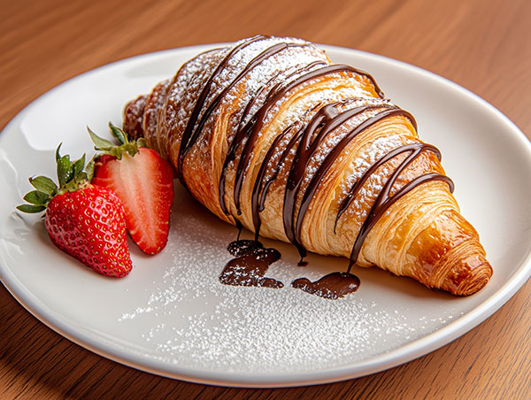

Chocolate Croissants
Description:
These extra flaky and buttery homemade chocolate croissants (Pain au Chocolat) are absolutely incredible when enjoyed warm, straight from the oven, with their layers of delicate pastry and rich, melty chocolate. Recreate this irresistible French bakery classic in your own kitchen and treat yourself to a taste of Paris with every bite!
Ingredients
- ¼ cup (4 Tbsp; 56g) unsalted butter, softened to room temperature.
- 4 cups (500g) all-purpose flour, plus more for rolling
- ¼ cup (50g) granulated sugar
- 2 teaspoons salt
- 1 Tablespoon active dry or instant yeast
- 1 and ½ cups (360ml) cold whole milk
- one 4-ounce bar (113g) semi-sweet or bittersweet chocolate, coarsely chopped
- optional: confectioners’ sugar for dusting
Butter Layer
- 1 and ½ cups (340g) unsalted butter, softened to room temperature
- 2 Tablespoons (16g) all-purpose flour
Egg Wash
- 1 Large egg
- 2 Tablespoons (30ml) whole milk
Directions
- Make Dough: Cut butter into 1-tbsp slices and place in a stand mixer. Add flour, sugar, salt, and yeast. Mix on low-medium speed for 1 min. Slowly add milk, then knead on medium speed for 5 minutes until dough is soft and slightly tacky (poke test or windowpane test to check).
- Rest Dough: Shape dough into a ball and place on a floured surface. Flatten and cover with plastic wrap. Chill in the fridge for 30 minutes.
- Shape Dough: Roll dough into a 14x10-inch rectangle. Cover and refrigerate for 4 hours or overnight.
- Make Butter Layer: Beat butter and flour until smooth. Spread into a 7x10-inch rectangle on a lined baking sheet. Chill for 30 minutes.
- Laminate Dough: Place chilled butter in the center of the dough. Fold dough over butter, then roll out to a 10x20-inch rectangle. Fold into thirds (first turn). Chill for 30 minutes if needed. Repeat rolling and folding for 2 more turns (second and third turn). Refrigerate for 4 hours or overnight.
- Shape Croissants: Roll dough into an 8x20-inch rectangle. Slice into 16 small rectangles. Stretch each one to 8 inches, fill with chocolate, and roll up tightly. Place on 2 lined baking sheets, cover, and rest at room temperature for 1 hour, then chill for 1 hour or up to 12 hours.
- Bake: Preheat oven to 400°F (204°C). Brush croissants with egg wash and bake for 20 minutes, rotating halfway through. If needed, reduce heat to 375°F (190°C). Cool on a wire rack, dust with powdered sugar if desired.